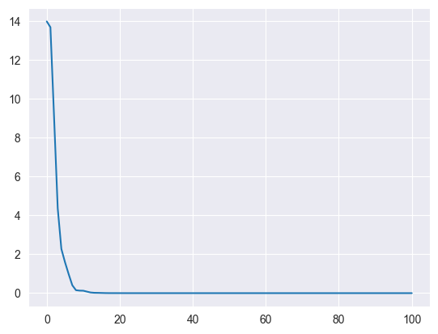
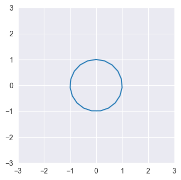
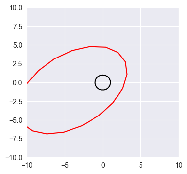
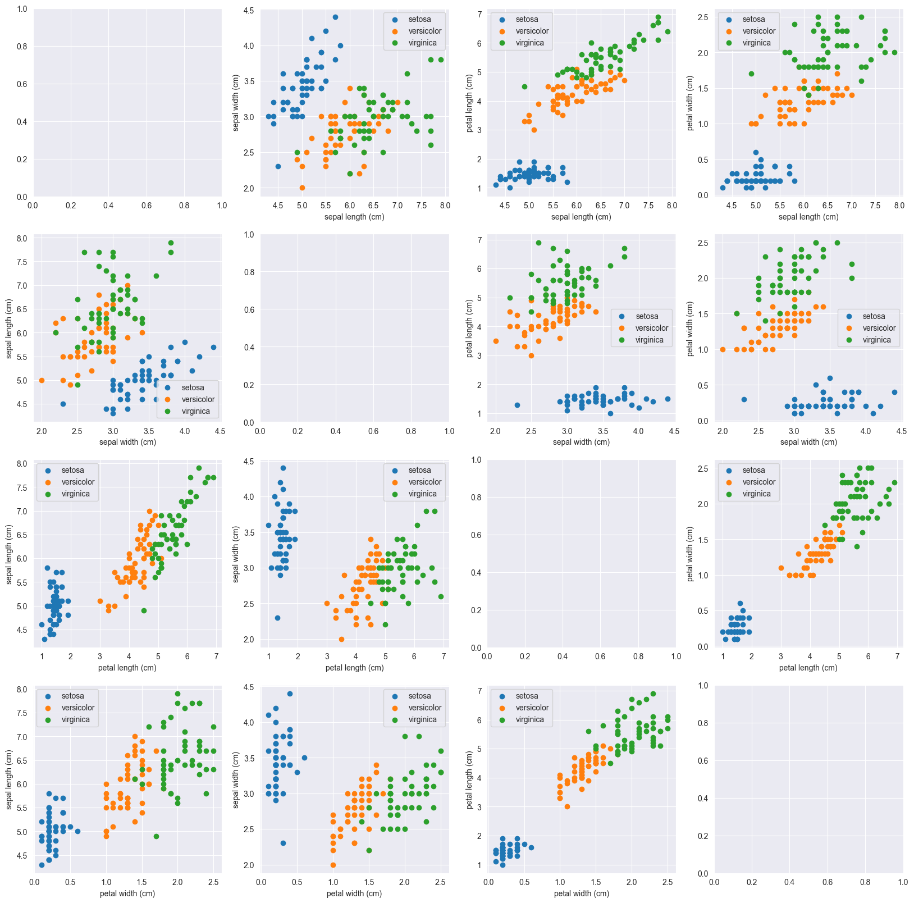

# Run me first!
import numpy as np
import matplotlib.pyplot as plt
import seaborn as sns
sns.set_style('darkgrid')Homework 1: Introduction to Numpy
Python setup
Part 1: Numpy basics
As discussed in class, a square matrix \(A\) defines a linear mapping: \(\mathbb{R}^n\rightarrow \mathbb{R}^n\). Given a vector \(\textbf{x}\), we can find the corresponding output of this mapping \(\textbf{b}\) using matrix-vector multiplication: \(\textbf{b}=A \textbf{x}\). We can write an example matrix-multiplication using matrix notation as:
\[\begin{bmatrix} 4 & -3 & 2 \\ 6 & 5 & 1 \\ -4 & -1 & 2 \end{bmatrix} \cdot \begin{bmatrix} 1 \\ -2 \\ 1 \end{bmatrix} = \begin{bmatrix} ? \\ ? \\ ? \end{bmatrix} \]
Q1: Perform this matrix-vector multiplication by hand and write the answer in the cell below.
$$ \[\begin{bmatrix} 12 \\ -3 \\ 0 \end{bmatrix}\]Q2: In the code cell below, create the matrix \(A\) and the vector \(\textbf{x}\) shown above, using Numpy. Then use the np.dot function to find the output of the mapping \(\textbf{b} = A\textbf{x}\). Verify that the answer matches what you derived above.
# Fill answers here
A = np.array([[4, -3, 2],
[6, 5, 1],
[-4, -1, 2]
])
x = np.array([1, -2, 1])
b = np.dot(A, x)
print(b)[12 -3 0]Often we will have access to the transformed vector \(\textbf{b}\) and need to find the orginal vector \(\textbf{x}\). To do this we need to solve the system of linear equations \(A\textbf{x}=\textbf{b}\) for \(\textbf{x}\). \[\begin{bmatrix} 4 & -3 & 2 \\ 6 & 5 & 1 \\ -4 & -1 & 2 \end{bmatrix} \cdot \begin{bmatrix} ? \\ ? \\ ? \end{bmatrix} = \begin{bmatrix} 2 \\ -1 \\ 3 \end{bmatrix} \]
Q3: Find the missing \(\textbf{x}\) in the equation above using the np.linalg.solve function and verify that \(A\textbf{x}=\textbf{b}\).
# Fill answer here (A is the same matrix from above)
b = np.array([2, -1, 3])
x = np.linalg.solve(A, b)
print(b, np.dot(A, x))[ 2 -1 3] [ 2. -1. 3.]In linear algebra you may have learned how to solve a system of linear equations using Gaussian elimination. Here we will implement an alternative approach known as Richardson iteration. In this method we start with an inital guess for the solution: \(\textbf{x}^{(0)}\), then we will iteratively update this guess until the solution is reached. Given a matrix \(A\), a target \(\textbf{b}\) and a current guess \(\textbf{x}^{(k)}\), we can compute the Richardson update as:
\[\textbf{x}^{(k+1)} \leftarrow \textbf{x}^{(k)} + \omega \left(\textbf{b} - A\textbf{x}^{(k)}\right)\]
Here \(\omega\) is a constant that we can choose to adjust the algorithm. We will set \(\omega = 0.1\).
Q4: Fill in the Richardson iteration function below and apply it to the system of linear equations from above using 100 updates. Verify that if gives a similar answer to np.linalg.solve.
# Fill in function below
def richardson_iter(x_guess, A, b, omega=0.1):
new_x_guess = x_guess + omega * (b - np.dot(A, x_guess))
return new_x_guess
x_guess = np.zeros(3)
for i in range(100):
x_guess = richardson_iter(x_guess, A, b)
print(x_guess, x)[-0.175 -0.2 1.05 ] [-0.175 -0.2 1.05 ]Recall that the length of a vector is given by it’s two-norm, which is defined as: \[\|\mathbf{x}\|_2 = \sqrt{\sum_{i=1}^n x_i^2}.\]
Correspondingly, the (Euclidian) distance between two points \(\mathbf{a}, \mathbf{b} \in \mathbb{R}^n\) can be written as \(\|\mathbf{a} - \mathbf{b}\|_2\). As a convenient measure of error for our Richardson iteration algorithm, we will use the squared Euclidean distance. For a guess \(\mathbf{x}^{(k)}\) we will compute the error \(e^{(k)}\) as: \[e^{(k)} = \|A\mathbf{x}^{(k)} - \mathbf{b}\|_2^2\]
In expanded form, this would be written as: \[e^{(k)} = \sum_{i=1}^n \left(\sum_{j=1}^n A_{ij}x^{(k)}_j - b_i\right)^2\]
Q5: Write a function to compute the error of a given guess. Then run Richardson iteration again for 100 steps, computing the error at each step. Finally create a plot of the error for each step (error vs. step).
Hint: recall that basic operations in numpy (addition, subtraction, powers) are performed element-wise.
# Fill in function below
def error(x_guess, A, b):
err = (np.dot(A, x_guess) - b) ** 2
err = err.sum()
return err
# Add code to plot the error over time
x_guess = np.zeros(3)
all_errors = [error(x_guess, A, b)]
for step in range(100):
x_guess = richardson_iter(x_guess, A, b)
all_errors.append(error(x_guess, A, b))
plt.plot(all_errors)

Q6: Derive the partial derivative of the error with respect to a single entry of \(\mathbf{x}^{(k)}\) (without loss of generality, we will say \(x^{(k)}_1\)). Work in the expanded form as in the equation above, writing your answer in the markdown cell below.
Hint: You may find it helpful to refer to the latex equation cheatsheet on the course website. You may show intermediate steps here or as handwritten work as a separate file in the repository. The final answer should be filled in here.
\[\frac{\partial e^{(k)}}{\partial x^{(k)}_1}= \frac{\partial}{\partial x^{(k)}_1} \sum_{i=1}^n \left(\sum_{j=1}^n A_{ij}x^{(k)}_j - b_i\right)^2\]
Apply sum and chain rules \[= 2\sum_{i=1}^n \left(\sum_{j=1}^n A_{ij}x^{(k)}_j - b_i\right) \frac{\partial}{\partial x^{(k)}_1}\left(\sum_{j=1}^n A_{ij}x^{(k)}_j - b_i\right)\] Apply sum rule noting that \(\frac{\partial}{\partial x^{(k)}_1}A_{ij}x_{j} = 0\) for \(j\neq 1\).
\[=2\sum_{i=1}^n \left(\sum_{j=1}^n A_{ij}x^{(k)}_j - b_i\right) A_{i1}\]
In practice, we will likely want to compute the derivative with respect to all entries of \(\mathbf{x}\): \[\frac{\partial e^{(k)}}{\partial \mathbf{x}^{(k)}} = \begin{bmatrix} \frac{\partial e^{(k)}}{\partial x^{(k)}_1} \\ \vdots \\ \frac{\partial e^{(k)}}{\partial x^{(k)}_n} \end{bmatrix}\]
Q7: Using the formula you just derived, write the formula for the vector of all partial derivatives in the compact matrix/vector notation (e.g. \(A\mathbf{x}=\mathbf{b}\)).
\(\sum_{j=1}^n A_{ij}x^{(k)}_j\) of the \(i^{th}\) entry of the matrix-vector product \(\mathbf{A}\mathbf{x}^{(k)}\) \[=2\sum_{i=1}^n \left( (\mathbf{A}\mathbf{x}^{(k)})_i - b_i\right) A_{i1}\]
Similarly subtracting \(b_i\) corresponds to vector subtraction with the vector \(\mathbf{b}\) \[=2\sum_{i=1}^n \left( \mathbf{A}\mathbf{x}^{(k)} - \mathbf{b}\right)_i A_{i1}\]
Finally we’re left with the equivalent of a dot product for entry 1!
\[\frac{\partial e^{(k)}}{\partial x_1^{(k)}}= 2 \left( \mathbf{A}\mathbf{x}^{(k)} - \mathbf{b}\right)^T \mathbf{A}_{1}\]
If we remove the index into \(\mathbf{A}\), we get an expression for the gradient! \[\frac{\partial e^{(k)}}{\partial \mathbf{x}^{(k)}}= 2 \left( \mathbf{A}\mathbf{x}^{(k)} - \mathbf{b}\right)^T \mathbf{A}\]
Q8: In 1-2 sentences describe how this answer relates to the Richardson iteration algorithm above. We will discuss this more in class!
We see that this gradient is almost equivalent to the update we made in our Richardson iteration, but scaled by \(-2\mathbf{A}\)!
Part 2: Working with batches of vectors
Recall that a vector can also be seen as either an \(n \times 1\) matrix (column vector) or a \(1 \times n\) matrix (row vector).
\[\text{Column vector: } \mathbf{x} = \begin{bmatrix} x_1 \\ x_2 \\ x_3 \end{bmatrix}, \quad \text{Row vector: } \mathbf{x} = \begin{bmatrix} x_1 & x_2 & x_3 \end{bmatrix}\]
Note that we use the same notation for both as they refer to the same concept (a vector). The difference becomes relevant when we consider matrix-vector multiplication. We can write matrix-vector multiplication in two ways: \[\text{Matrix-vector: }A\mathbf{x} = \mathbf{b}, \quad \text{Vector-matrix: }\mathbf{x}A^T= \mathbf{b}\] In matrix-vector multiplication we treat \(\textbf{x}\) as a column vector (\(n \times 1\) matrix), while in vector-matrix multiplication we treat it as a row vector (\(n \times 1\) matrix). Transposing \(A\) for left multiplication ensures that the two forms give the same answer.
Q9: Using the previously defined \(\mathbf{x}\), create an explicit column vector and row vector. Then using the previously defined \(A\), verify that the matrix-vector and vector-matrix multiplications shown above do produce the same resultant vector \(\mathbf{b}\).
Hint: Recall that np.dot is also used for matrix-matrix multiplication.
# Fill in code here
x_col = x[:, None] # Add new diminsion 1
x_row = x[None, :] # Add new dimension 0
print(np.dot(A, x_col), np.dot(x_row, A.T))[[ 2.]
[-1.]
[ 3.]] [[ 2. -1. 3.]]Throughout this course we will typically use row vectors and vector-matrix multiplication, as this is more conventional in neural-network literature. The concept of row and column vectors becomes handy when transforming collections of vectors.
Recall that a matrix can be seen as a collection of vectors. In numpy we can create a matrix from a list of (1- dimensional) vectors using the np.stack function. This function assumes that the vectors are row vectors creating the matrix as follows: \[\begin{bmatrix}
3 & 1 & -2
\end{bmatrix},\ \begin{bmatrix}
4 & 5 & 3
\end{bmatrix},\ \begin{bmatrix}
-2 & -1 & 5
\end{bmatrix}\quad \overset{\text{np.stack}}{\longrightarrow} \begin{bmatrix}
3 & 1 & -2 \\
4 & 5 & 3 \\
-2 & -1 & 5
\end{bmatrix} \]
We will call this matrix \(X\) to denote that it is a collection of vectors, rather than a single vector (\(\mathbf{x}\)).
Q10: Create this matrix in numpy using th np.stack function.
X = np.stack([np.array([3, 1, -2]),
np.array([4, 5, 3]),
np.array([-2, -1, 5])])
print(X)[[ 3 1 -2]
[ 4 5 3]
[-2 -1 5]]When taken together as a matrix in this way, we can apply the linear mapping \(A\) to all vectors using matrix-matrix multiplication: \[B=XA^T\]
Let’s put this into practice with a visual example.
Q11: Create a \(20 \times 3\) matrix, circle, in numpy of the following form
\[ \begin{bmatrix} \sin(\theta_1) & \cos(\theta_1) & 1 \\ \sin(\theta_2) & \cos(\theta_2) & 1 \\ \vdots & \vdots & \vdots \\ \sin(\theta_{20}) & \cos(\theta_{20}) & 1 \\ \end{bmatrix}\] Where \(\theta_1...\theta_{20}\) are evenly spaced between \(0\) and \(2\pi\).
theta = np.linspace(0, 2 * np.pi, 20) # Generates 20 evenly-spaced numbers between 0 and 2π
# Fill in your code here
circle = np.stack([np.sin(theta), np.cos(theta), np.ones_like(theta)]).TThe code we just wrote creates a matrix corresponding to a collection of \(20\) row vectors of length 3. Each vector represents a point on the unit circle where the first entry is the x-coordinate, the second entry is the y-coordinate and the third entry is always \(1\): \[ \begin{bmatrix} x & y & 1 \end{bmatrix}\]
Q12: Plot the set of 20 points in circle using the plt.plot function. Use only the x and y coordinates, ignoring the column of 1s.
plt.figure(figsize=(4, 4))
plt.xlim(-3, 3)
plt.ylim(-3, 3)
# Fill your code here
plt.plot(circle[:, 0], circle[:, 1])
Q13: Transform all the vectors in circle with the matrix \(A\) using a single call to np.dot. Then plot the original set of points in black and the transformed points in red using the plt.plot function.
You might also consider why we added the extra column of 1s! We will discuss the answer to that in class.
# Fill your code here
transformed_circle = np.dot(circle, A)plt.figure(figsize=(4, 4))
plt.xlim(-10, 10)
plt.ylim(-10, 10)
# Fill your code here
plt.plot(circle[:, 0], circle[:, 1], c='k')
plt.plot(transformed_circle[:, 0], transformed_circle[:, 1], c='r')
Part 3: Loading and visualizing data
For most of this class we will be working with real-world data. A very well-known dataset in statistics is the Iris flower dataset collected by Edgar Anderson in 1929. The dataset consists of measurments of iris flowers. Each flower has 4 collected measurements: sepal length, sepal width, petal length, petal width, as well as a classification into one of 3 species: Iris setosa, Iris versicolor and Iris virginica. We will return to this dataset in the next homework.
We can load this dataset as Numpy objects using the Scikit-Learn library. Below we’ve extrated 4 relevant arrays: - features: a \(150 \times 4\) matrix which has one row per observed flower and one column per measurement. - targets: a length \(150\) array that specifies the species of each flower as a number 0-2. - feature_names: a list of strings with the name of each measurement. - target_names: a list of strings with the name of each species.
In this homework, we will only visualize this dataset, which is typically a good first step in working with a new type of data. To get a convenient summary of the data we will create what is called a scatterplot matrix. This is a grid of plots where each plot contains a scatter plot with different features on the x and y axes. Because there are 4 features (measurements) in this data, we will create a 4-by-4 matrix to plot each pair of features.
Q14: Fill in the code to create a scatterplot matrix for the Iris dataset below. - Each row of the matrix should use a different feature for the y-axis and each column should use a different feature for the x-axis. The plots on the diagonal where x and y would be the same feature can be ignored. - The x and y axis of each sub-plot should be labeled with the appropriate feature names. - The points in each scatterplot should be colored by the species label of that flower. Include a legend in at least 1 sub-plot.
Hint: The linked Wikipedia article shows an example of a scatterplot matrix for this dataset, feel free to use it as reference!
import sklearn.datasets as datasets
dataset = datasets.load_iris()
features = dataset['data']
targets = dataset['target']
feature_names = dataset['feature_names']
target_names = dataset['target_names']
# Fill in the code below
fig, ax = plt.subplots(4, 4, figsize=(20, 20))
for i in range(4):
for j in range(4):
# Skip sub-plots on the diagonal
if i == j:
continue
# Add subplot code here
for c, name in enumerate(target_names): # Iterate through the different classes
# Plot only the features of examples in that class, label specifies the name for the legend
ax[i, j].scatter(features[targets == c, i], features[targets == c, j], label=name)
ax[i, j].legend() # Create the legend
# Set the axis labels
ax[i, j].set_xlabel(feature_names[i])
ax[i, j].set_ylabel(feature_names[j])